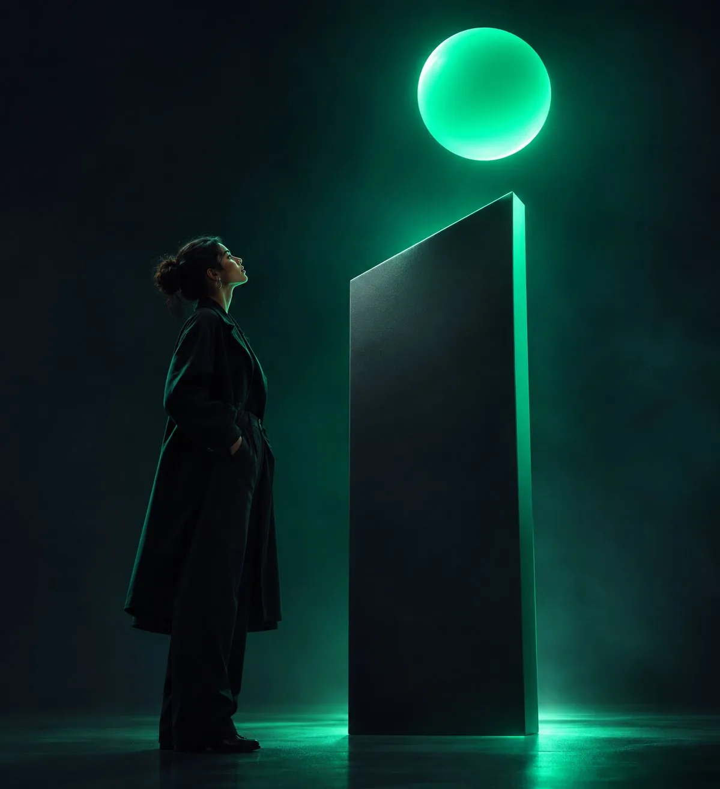
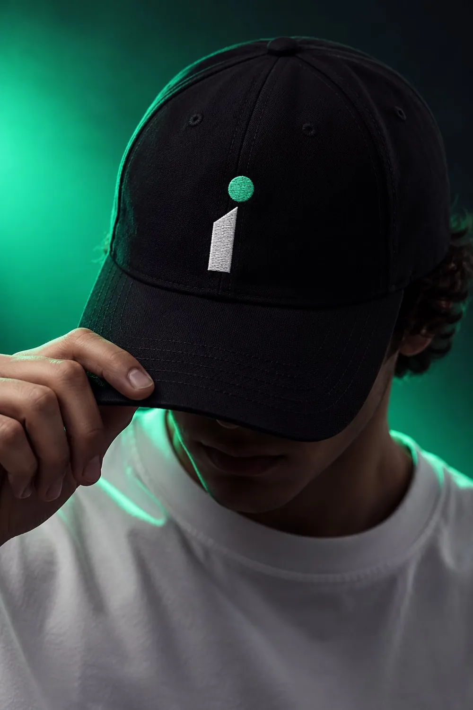
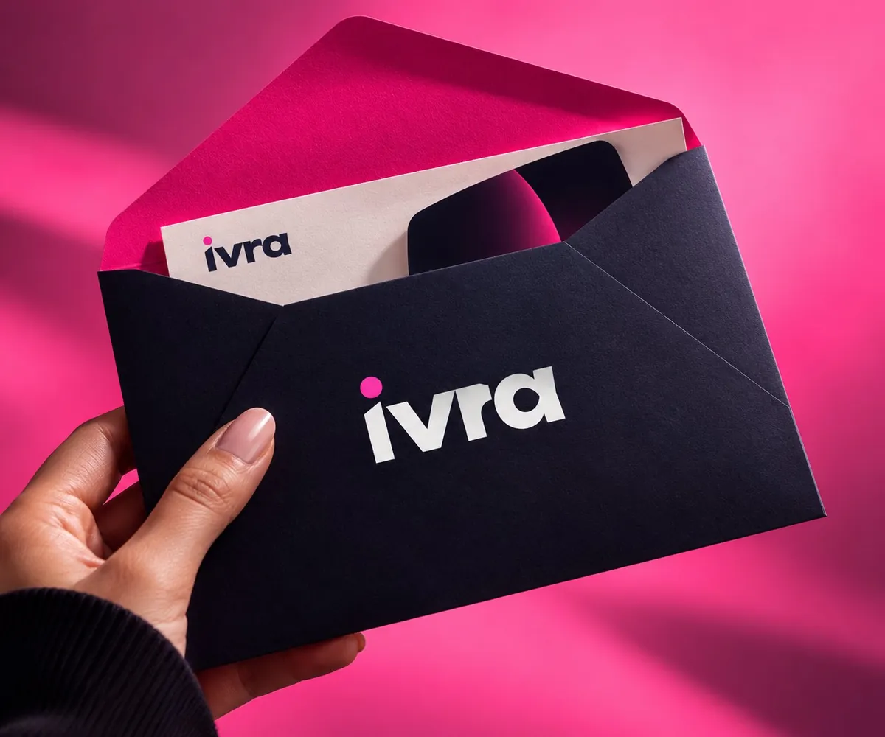
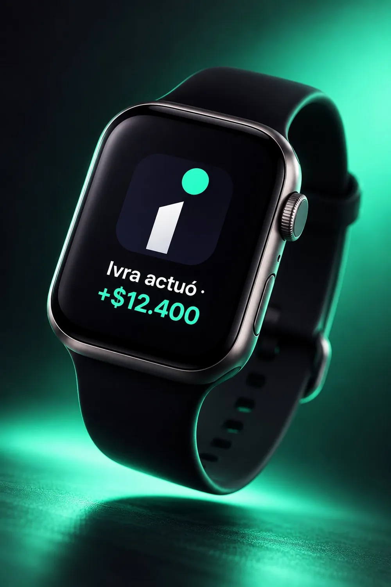
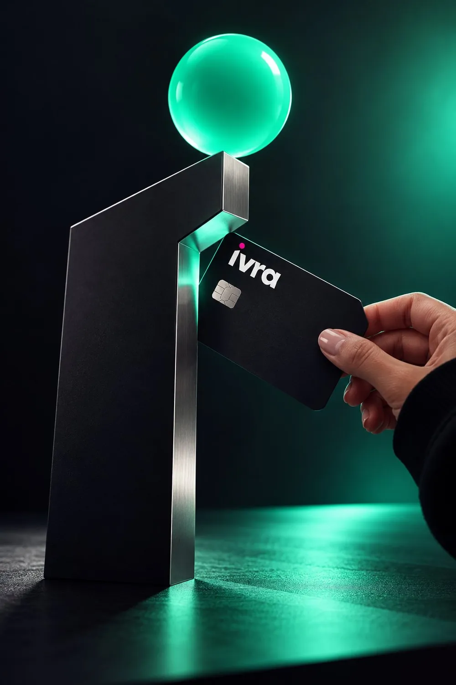
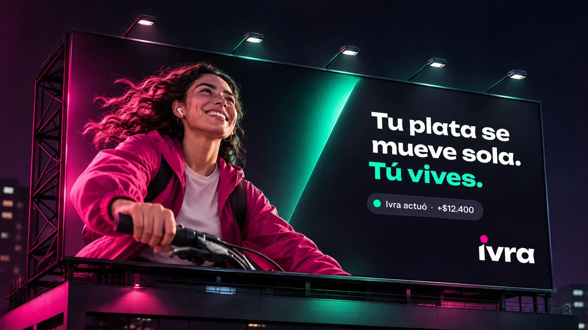

El problema
La banca digital quitó las filas, pero el trabajo sigue siendo tuyo: revisar, calcular, no olvidar.
Tu dinero va un paso adelante.
El reto
Ivra es un banco digital cuya IA no sugiere: decide y actúa. Eso rompe el supuesto de toda app bancaria, donde cada movimiento lo inicia el usuario. El reto fue diseñar una experiencia en la que delegar tu dinero se sienta seguro.
La banca digital quitó las filas, pero el trabajo sigue siendo tuyo: revisar, calcular, no olvidar.
Un banco autónomo: tú pones las metas y le hablas; Ivra se adelanta y ejecuta.
Cuanto más hace la IA, menos control siente la persona. Todo el UX resuelve eso.
El nombre
Corto, se dice igual en cualquier idioma y guarda tres ideas.
IA
La inteligencia que mueve tu dinero por ti.
vibra
La energía de una generación que vive rápido.
libra
Suena a la palabra que siempre ha unido dinero y equilibrio.
Antes de llegar aquí descarté diez nombres por estar ocupados en el sector financiero.
El símbolo
En cualquier "i" el punto está encima. En Ivra está lanzado hacia adelante, siguiendo la diagonal del palito. Es la IA anticipándose a lo que viene, y es el ícono de la app.
El tope del palito es perpendicular al trazo de la "v": 24,7°.
El punto viaja sobre esa misma diagonal. Se adelanta.
El palito tiene el grosor de la "r" y el punto su mismo diámetro.
Ese ángulo de 24,7° se volvió el gesto de toda la marca: aparece en botones, tarjetas y paneles.
El sistema
base y confianza
texto y aire
lo que haces tú
lo que hizo Ivra
Rosa es lo que haces tú. Menta es lo que hizo Ivra. Nunca se mezclan en un mismo elemento, así que de un vistazo sabes qué pasó por tus manos y qué no.
70 noche · 20 blanco · 10 color
Aa
Titulares. Ancha, pesada y con cortes rectos que se sienten del futuro.
Aa $12.400
Textos, interfaz y cifras. Clara y neutra, para que lo importante se entienda a la primera.
La voz
Corto, cercano y sin letra pequeña. Nada de lenguaje bancario.
| Así sí | Así no |
|---|---|
| Me adelanté: pagué la luz antes del recargo. | Su pago ha sido procesado exitosamente. |
| Te quedan $380.000 libres este mes. | Saldo disponible: $380.000. |
"Me adelanté: pagué la luz antes del recargo."
"Listo, le mandé $48.000 a Sofi."
"Mientras dormías, ahorré por ti."
"Ojo, ese cobro no lo reconozco. ¿Lo bloqueo?"
Aplicaciones
Estudio oscuro, materiales mate y encuadres cerrados. La marca funciona como objeto y como estilo de vida.






Una marca puede prometer que la IA actúa sola. Una app tiene que lograr que alguien se lo crea.
El problema
La pregunta de diseño dejó de ser cómo navegar y pasó a ser cómo confiar. La resolví con tres principios.
Todo lo que hace la IA se puede deshacer en un toque.
Cada acción explica por qué se hizo, antes de decir cuánto costó.
Cada persona decide cuánto puede hacer la IA, desde el primer minuto.
Hipótesis de partida · no son hallazgos
Persona
Diseñadora freelance, Bogotá, ingreso variable.
¿Cómo podríamos…?
El flujo
● Lo haces tú● Lo hace Ivra
Entrada
Uso diario
Control
Las pantallas
Paso 1
La primera decisión del onboarding, no un ajuste escondido: cuánta libertad le das. Tres niveles: te pregunta, te avisa, lo hace sola. Más un límite por operación que puedes mover.
Paso 2
Lo bancario de siempre (saldo, tarjeta, movimientos) más una sola tarjeta destacada: lo último que hizo Ivra, con lo que te ahorró y el acceso a deshacerlo.
Paso 3
El centro del producto. Voz o texto, con ejemplos visibles de lo que puedes pedir. Cada respuesta trae su acción ya hecha y su comprobante.
Paso 4
Qué hizo, por qué lo hizo, cuánto te ahorró y cómo quedó tu saldo. Deshacer vive aquí, junto al susto, no en el historial.
Paso 5
Dos barras comparadas: como vas hoy llegas en marzo, con dos domicilios menos llegas en enero. Ivra propone el cambio y tú decides.
Prototipo navegable con el flujo completo. Empieza por "Crear mi cuenta", elige qué tanto dejas que Ivra haga sola y mira cómo cambia su forma de actuar en el chat.
Pista
Si eliges "Te pregunta", Ivra te pide permiso antes de mover un peso. Si eliges "Lo hace sola", ejecuta y te cuenta. Ese contraste es el corazón del caso.
El sistema
Te pagué la luz antes de que subiera
La factura vencía mañana y después cobraban más.
Qué hizo + por qué + deshacer. Borde menta.
Etiqueta en mono con el punto menta. Marca todo lo que no pasó por tus manos.
Tres opciones con estado seleccionado en menta y un límite ajustable.
Prendido en menta, pausado en gris. Lo que pediste hablando queda visible y apagable.
Rosa, con una esquina cortada en el ángulo de la marca.
Págale a Sofi la cena
Listo, le mandé $48.000 a Sofi.
Usuario en rosa con la esquina viva abajo; Ivra en superficie con el punto menta de avatar.
Decisiones
Escondido en un menú nadie lo tocaría y la IA se sentiría impuesta. Al entrar, el miedo se convierte en una decisión propia.
Con la cifra primero se lee como un cobro sorpresa. Con el motivo arriba, la misma acción se lee como un favor.
La reversa tiene que estar donde aparece el susto. Si hay que buscarla, la confianza ya se rompió.
Pedir en lenguaje natural es rápido e invisible. Por eso cada frase se vuelve una regla que se ve, se edita y se apaga.
Qué probaría con usuarios
Si al ver "Ivra actuó" la primera reacción es tranquilidad o alarma; qué nivel elige la gente y si lo sube con el tiempo; cuántos usan deshacer y por qué.
Lo que me llevo
Cuando un producto decide por alguien, el diseño deja de ser navegación y pasa a ser confianza: explicar, acotar y dejar salida.
Contexto
Mientras trabajaba el caso, el mercado se movió: Mercado Pago lanzó Mago, un asistente de IA dentro de la billetera para pagar y transferir por voz o texto, aunque ninguna operación se cierra sin la validación final del usuario. Afuera, Rowan de Rocket Money ya cancela suscripciones y automatiza ahorro, y bancos como JPMorgan mueven plata entre cuentas de forma automática. Lo que sigue sin resolverse es justo lo que propone Ivra: elegir el nivel de autonomía desde el primer minuto, entender el porqué de cada acción y poder deshacerla.
Tu dinero va un paso adelante.